- 00 导读 余晟：我是怎么学习和使用正则的？.md.html
- 00 开篇词丨学习正则，我们到底要学什么？.md.html
- 01 元字符：如何巧妙记忆正则表达式的基本元件？.md.html
- 02丨量词与贪婪：小小的正则，也可能把CPU拖垮！.md.html
- 03 分组与引用：如何用正则实现更复杂的查找和替换操作？.md.html
- 04 匹配模式：一次性掌握正则中常见的4种匹配模式.md.html
- 05 断言：如何用断言更好地实现替换重复出现的单词？.md.html
- 06 转义：正则中转义需要注意哪些问题？.md.html
- 07 正则有哪些常见的流派及其特性？.md.html
- 08 应用1：正则如何处理 Unicode 编码的文本？.md.html
- 09 应用2：如何在编辑器中使用正则完成工作？.md.html
- 10 应用3：如何在语言中用正则让文本处理能力上一个台阶？.md.html
- 11 如何理解正则的匹配原理以及优化原则？.md.html
- 12 问题集锦：详解正则常见问题及解决方案.md.html
- 加餐 从编程语言的角度来理解正则表达式.md.html
- 结束语 使用正则提高你的人生效率.md.html
- 捐赠
03 分组与引用：如何用正则实现更复杂的查找和替换操作？
你好，我是伟忠。今天我打算和你聊聊分组与引用。那什么场合下会用到分组呢？
假设我们现在要去查找15位或18位数字。根据前面学习的知识，使用量词可以表示出现次数，使用管道符号可以表示多个选择，你应该很快就能写出\d{15}|\d{18}。但经过测试，你会发现，这个正则并不能很好地完成任务，因为18位数字也会匹配上前15位，具体如下图所示。
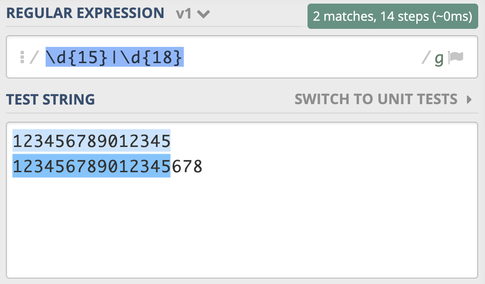
为了解决这个问题，你灵机一动，很快就想到了办法，就是把15和18调换顺序，即写成 \d{18}|\d{15}。你发现，这回符合要求了。
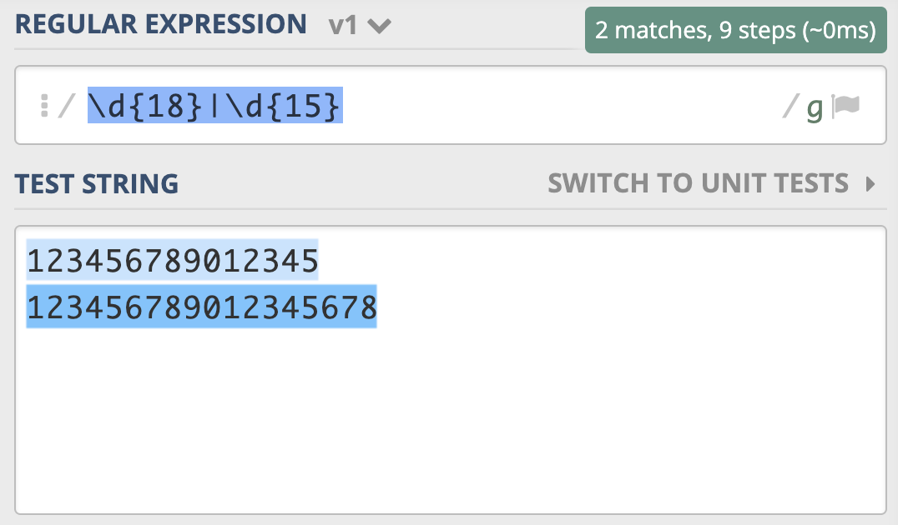
为什么会出现这种情况呢？因为在大多数正则实现中，多分支选择都是左边的优先。类似地，你可以使用 “北京市|北京” 来查找 “北京” 和 “北京市”。另外我们前面学习过，问号可以表示出现0次或1次，你发现可以使用“北京市?” 来实现来查找 “北京” 和 “北京市”。
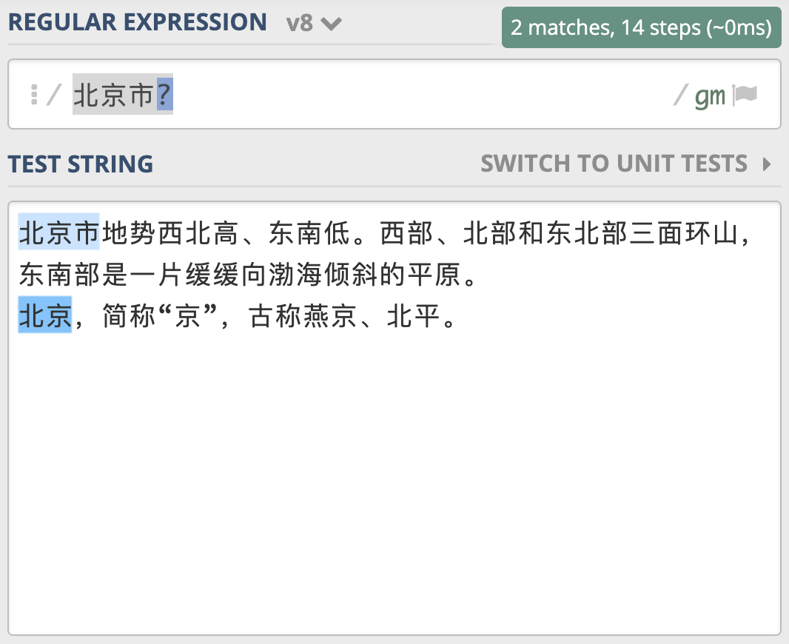
同样，针对15或18位数字这个问题，可以看成是15位数字，后面3位数据有或者没有，你应该很快写出了 \d{15}\d{3}? 。但这样写对不对呢？我们来看一下。
在上一节我们学习了量词后面加问号表示非贪婪，而我们现在想要的是 \d{3} 出现0次或1次。
示例一：- \d{15}\d{3}? 由于 \d{3} 表示三次，加问号非贪婪还是3次
示例二：- \d{15}(\d{3})? 在 \d{3} 整体后加问号，表示后面三位有或无
这时候，必须使用括号将来把表示“三个数字”的\d{3}这一部分括起来，也就是表示成\d{15}(\d{3})?这样。现在就比较清楚了：括号在正则中的功能就是用于分组。简单来理解就是，由多个元字符组成某个部分，应该被看成一个整体的时候，可以用括号括起来表示一个整体，这是括号的一个重要功能。其实用括号括起来还有另外一个作用，那就是“复用”，我接下来会给你讲讲这个作用。
分组与编号
括号在正则中可以用于分组，被括号括起来的部分“子表达式”会被保存成一个子组。
那分组和编号的规则是怎样的呢？其实很简单，用一句话来说就是，第几个括号就是第几个分组。这么说可能不好理解，我们来举一个例子看一下。
这里有个时间格式 2020-05-10 20:23:05。假设我们想要使用正则提取出里面的日期和时间。
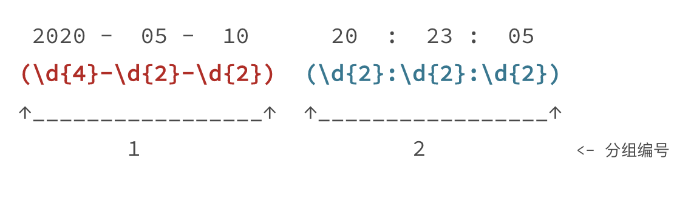
我们可以写出如图所示的正则，将日期和时间都括号括起来。这个正则中一共有两个分组，日期是第 1 个，时间是第 2 个。
不保存子组
在括号里面的会保存成子组，但有些情况下，你可能只想用括号将某些部分看成一个整体，后续不用再用它，类似这种情况，在实际使用时，是没必要保存子组的。这时我们可以在括号里面使用 ?: 不保存子组。
如果正则中出现了括号，那么我们就认为，这个子表达式在后续可能会再次被引用，所以不保存子组可以提高正则的性能。除此之外呢，这么做还有一些好处，由于子组变少了，正则性能会更好，在子组计数时也更不容易出错。
那到底啥是不保存子组呢？我们可以理解成，括号只用于归组，把某个部分当成“单个元素”，不分配编号，后面不会再进行这部分的引用。
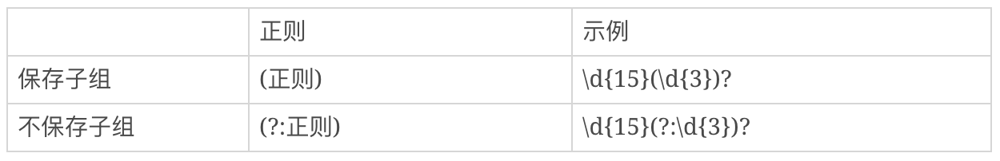
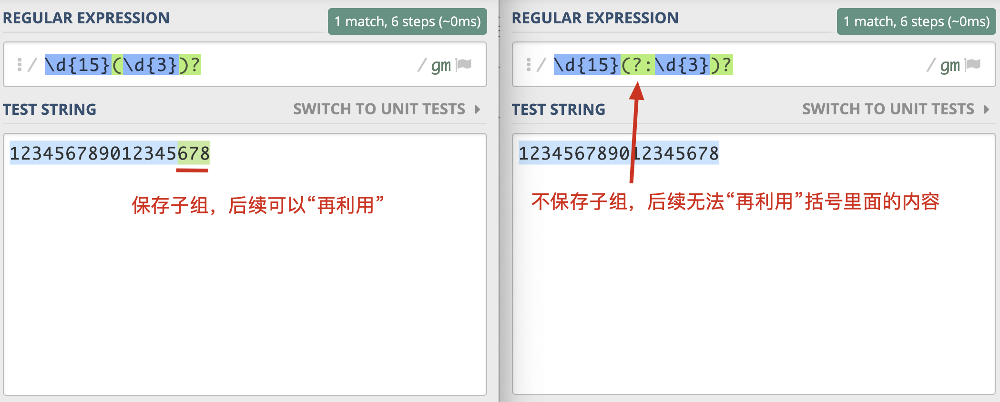
括号嵌套
前面讲完了子组和编号，但有些情况会比较复杂，比如在括号嵌套的情况里，我们要看某个括号里面的内容是第几个分组怎么办？不要担心，其实方法很简单，我们只需要数左括号（开括号）是第几个，就可以确定是第几个子组。
在阿里云简单日志系统中，我们可以使用正则来匹配一行日志的行首。假设时间格式是 2020-05-10 20:23:05 。
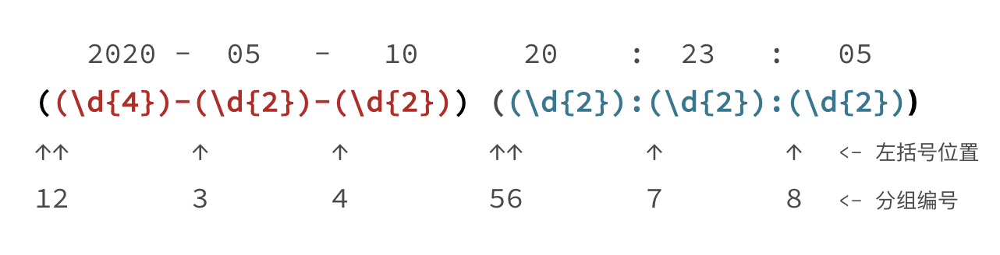
日期分组编号是 1，时间分组编号是 5，年月日对应的分组编号分别是 2，3，4，时分秒的分组编号分别是 6，7，8。
命名分组
前面我们讲了分组编号，但由于编号得数在第几个位置，后续如果发现正则有问题，改动了括号的个数，还可能导致编号发生变化，因此一些编程语言提供了命名分组（named grouping），这样和数字相比更容易辨识，不容易出错。命名分组的格式为(?P<分组名>正则)。
比如在Django的路由中，命名分组示例如下：
url(r'^profile/(?P<username>\w+)/$', view_func)
需要注意的是，刚刚提到的方式命名分组和前面一样，给这个分组分配一个编号，不过你可以使用名称，不用编号，实际上命名分组的编号已经分配好了。不过命名分组并不是所有语言都支持的，在使用时，你需要查阅所用语言正则说明文档，如果支持，那你才可以使用。
分组引用
在知道了分组引用的编号 （number）后，大部分情况下，我们就可以使用 “反斜扛 + 编号”，即 \number 的方式来进行引用，而 JavaScript中是通过$编号来引用，如$1。
我给到了你一些在常见的编程语言中，分组查找和替换的引用方式：
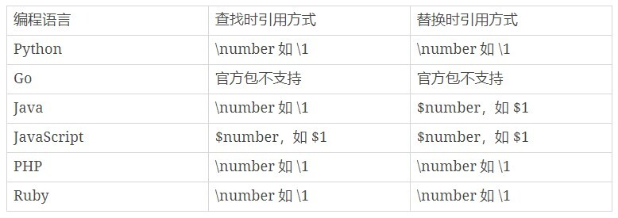
这些内容不要求你完全记住，只要有个印象就好，最关键的是要知道正则可以实现这样的功能，
需要用到的时候查一下相应的文档，就知道怎么用了。
分组引用在查找中使用
前面介绍了子组和引用的基本知识，现在我们来看下在正则查找时如何使用分组引用。比如我们要找重复出现的单词，我们使用正则可以很方便地使“前面出现的单词再次出现”，具体要怎么操作呢？我们可以使用 \w+ 来表示一个单词，针对刚刚的问题，我们就可以很容易写出 (\w+) \1 这个正则表达式了。
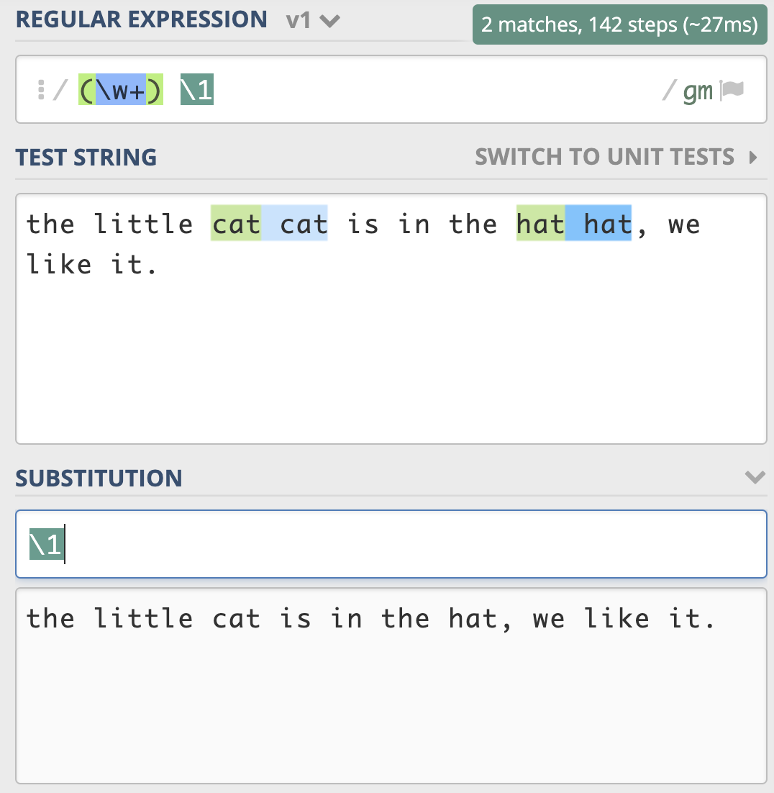
分组引用在替换中使用
和查找类似，我们可以使用反向引用，在得到的结果中，去拼出来我们想要的结果。还是使用刚刚日期时间的例子，我们可以很方便地将它替换成， 2020年05月10日这样的格式。
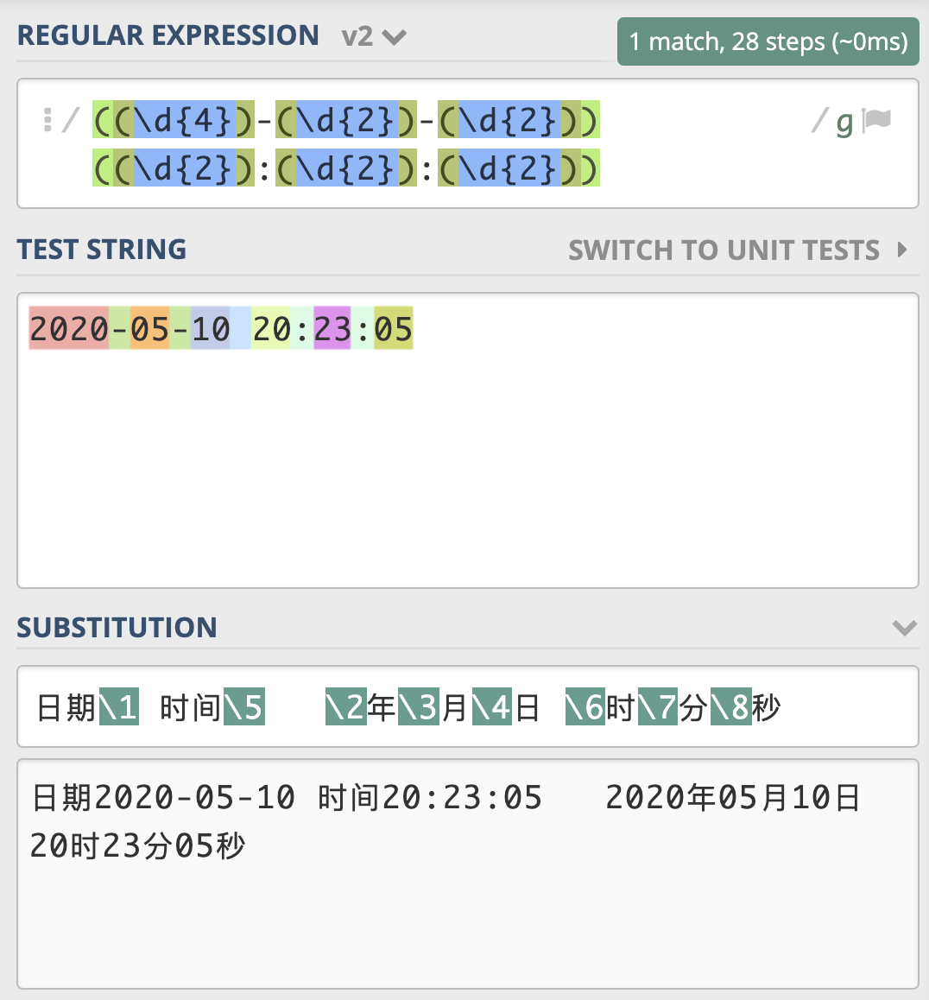
由于这个例子稍微复杂一些，这里我给出一个示例链接方便你学习，不知道学到这里，你有没有觉得子组和引用非常强大呢？
你可能很好奇，那在编程语言中如何实现这个功能呢？我下面以Python3为例，给出一个示例。
>>> import re
>>> test_str = "2020-05-10 20:23:05"
>>> regex = r"((\d{4})-(\d{2})-(\d{2})) ((\d{2}):(\d{2}):(\d{2}))"
>>> subst = r"日期\1 时间\5 \2年\3月\4日 \6时\7分\8秒"
>>> re.sub(regex, subst, test_str)
'日期2020-05-10 时间20:23:05 2020年05月10日 20时23分05秒'
在Python中 sub 函数用于正则的替换，使用起来也非常简单，和在网页上操作测试的几乎一样。
在文本编辑器中使用
Sublime Text 3 简介
接下来我用Sublime Text 3 来当例子，给你讲解一下正则查找和替换的使用方式。Sublime Text 3 是一个跨平台编辑器，非常小巧、强悍，虽然是一个收费软件，但可以永久试用，你自行可以下载安装。
当熟练使用编辑器之后，你会发现在很多工作里都可以使用它，不需要编写代码就可以完成。
下面我以文本编辑器 Sublime Text 3 为例，来讲解正则查找和替换的使用方式。首先，我们要使用的“查找”或“替换”功能，在菜单 Find 中可以找到。
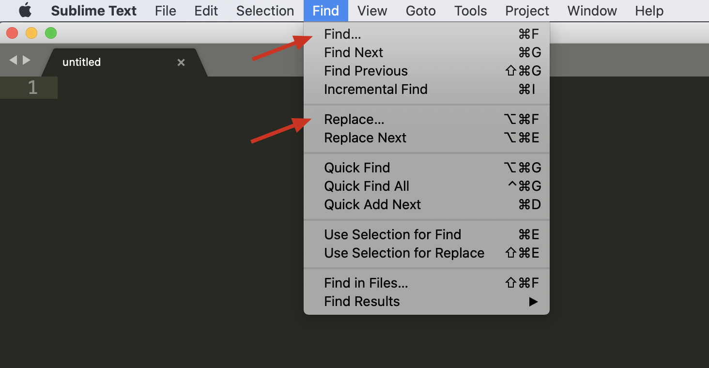
下面是对编辑器查找-替换界面的图标简介，Find 输入栏第一个 .* 图标，表示开启或关闭正则支持。
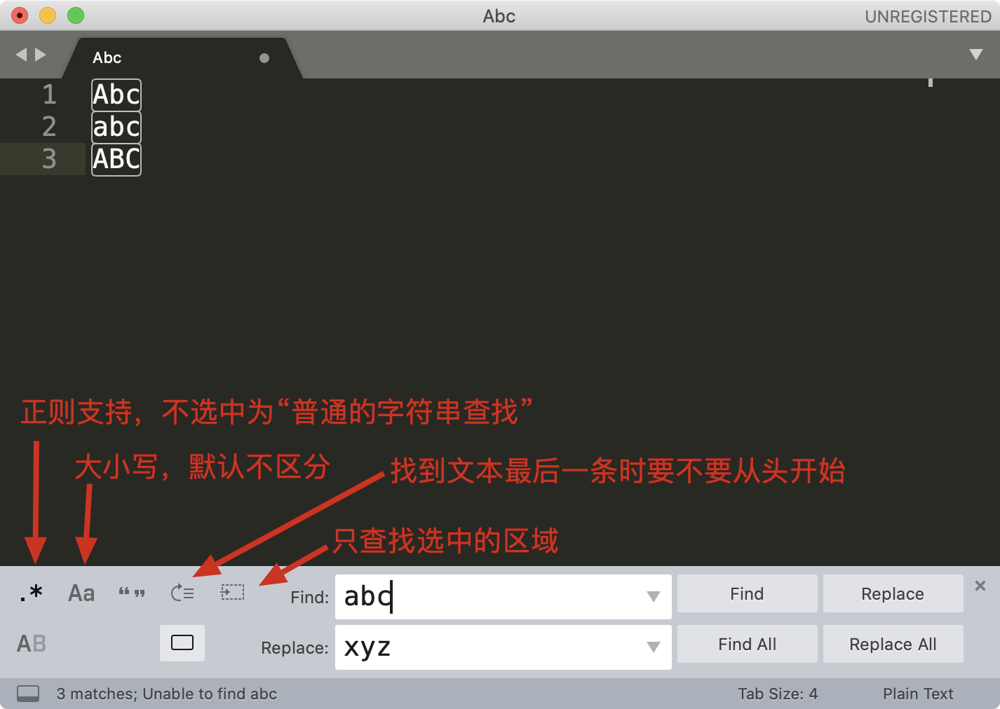
编辑器中进行正则查找
接下来，我们来演示用编辑器查找引号引起来的内容，课程中使用到的文本，建议你用 chrome 等浏览器等，打开极客时间网页版本 https://time.geekbang.org，点击右键查看源代码，把看到的代码复制到 Sublime Text 3 中。
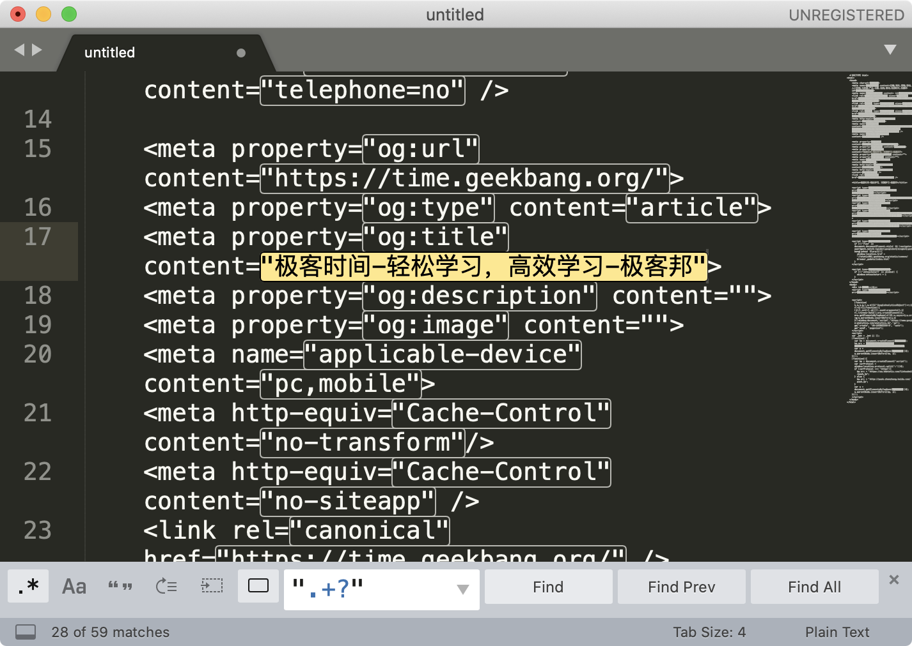
输入相应的正则，我们就可以看到查找的效果了。这里给一个小提示，如果你点击 Find All，然后进行剪切，具体操作可以在菜单中找到 Edit -> Cut，也可以使用快捷键操作。剪切之后，找一个空白的地方，粘贴就可以看到提取出的所有内容了。
我们可以使用正则进行资源链接提取，比如从一个图片网站的源代码中查找到图片链接，然后再使用下载工具批量下载这些图片。
在编辑器中进行正则替换
接着，我们再来看一下在编辑器中进行文本替换工作。你可以在编辑器中输入这些文本：
the little cat cat is in the hat hat, we like it.
如果我们要尝试从中查找连续重复出现两次的单词，我们可以用 \w+ 代表单词，利用我们刚刚学习的知识，相信你可以很快写出正则 (\w+) \1。**
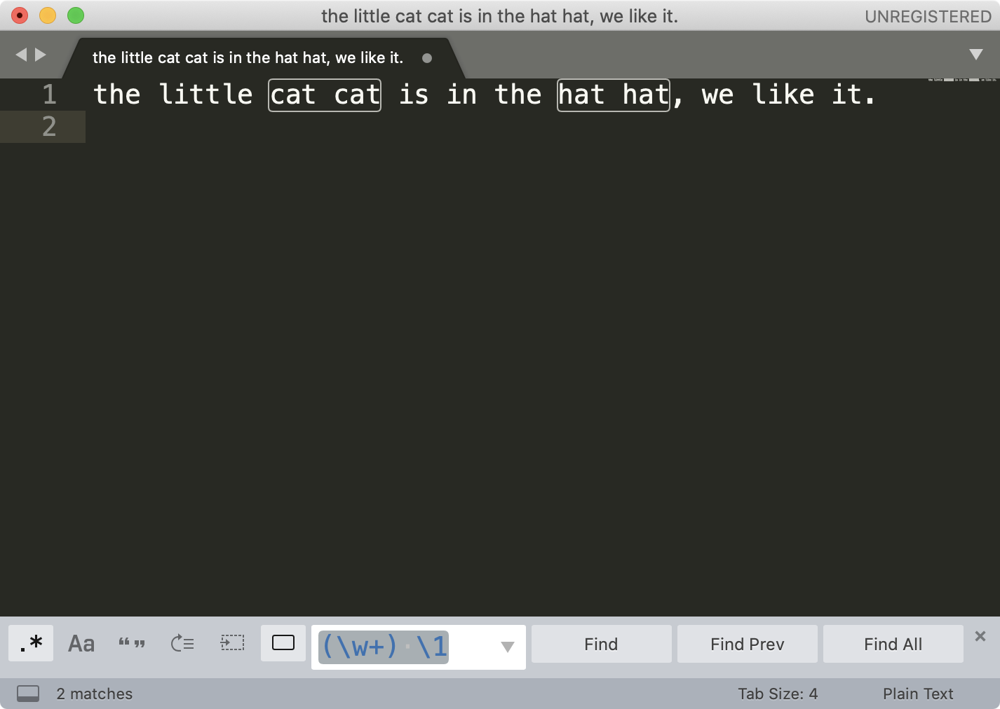
接着点击菜单中的 Find -> Replace，在替换栏中输入子组的引用 \1 ，然后点击 Replace All 就可以完成替换工作了。
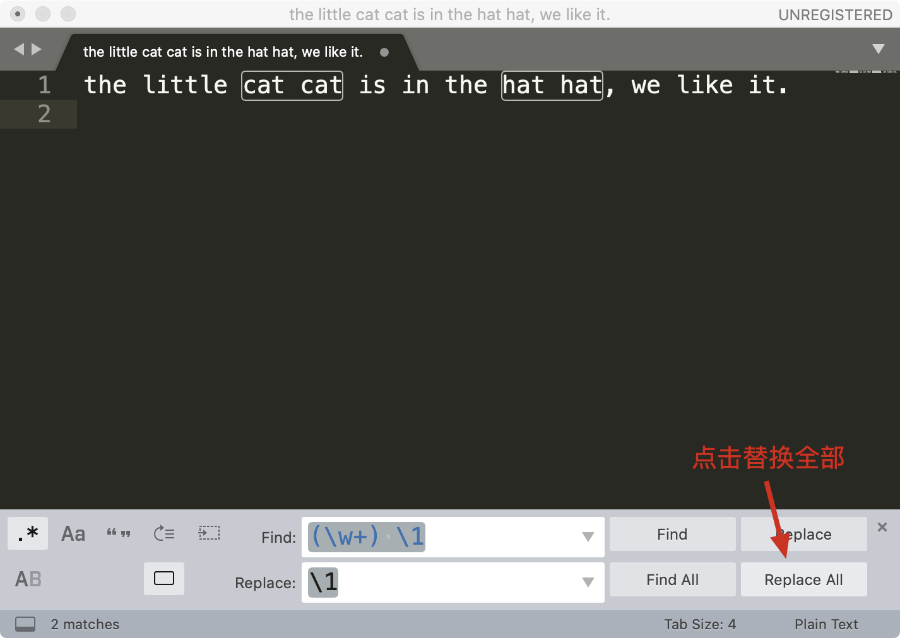
这样，通过少量的正则，我们就完成了文本的处理工作了。
几乎所有主流编辑器都是支持正则的，你可以在你喜欢的编辑器中尝试一下这个例子，在后面的工作中，也可以尝试使用它来完成一些复杂的文本查找和替换工作。
总结
好了，今天的内容讲完了，我来带你总结回顾一下。
今天我们学习到了正则中的分组和子组编号相关内容。括号可以将某部分括起来，看成一个整体，也可以保存成一个子组，在后续查找替换的时候使用。分组编号是指，在正则中第几个括号内就是第几个分组，而嵌套括号我们只要看左括号是第几个就可以了。如果不想将括号里面的内容保存成子组，可以在括号里面加上?:来解决。
搞懂了分组的内容，我们就可以利用分组引用，来实现将“原文本部分内容”，在查找或替换时进行再次利用，达到实现复杂文本的查找和替换工作。甚至在使用一些文本编辑器的时候，不写代码，我们就可以完成文本的查找替换处理工作，这往往可以节约很多开发时间。
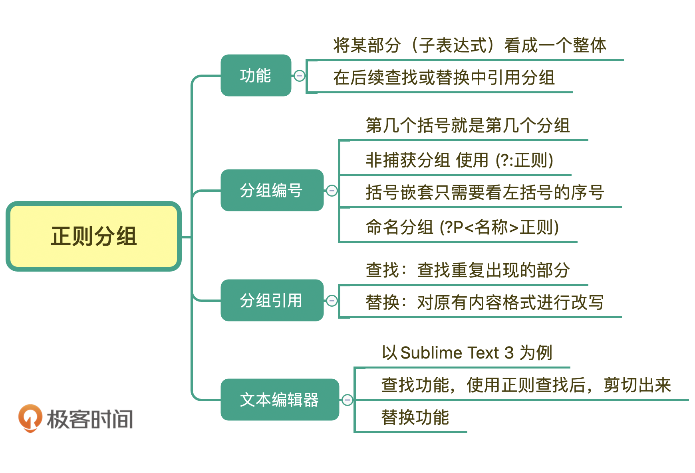
课后思考
最后，我们来做一个小练习吧。有一篇英文文章，里面有一些单词连续出现了多次，我们认为连续出现多次的单词应该是一次，比如：
the little cat cat is in the hat hat hat, we like it.
其中 cat 和 hat 连接出现多次，要求处理后结果是
the little cat is in the hat, we like it.
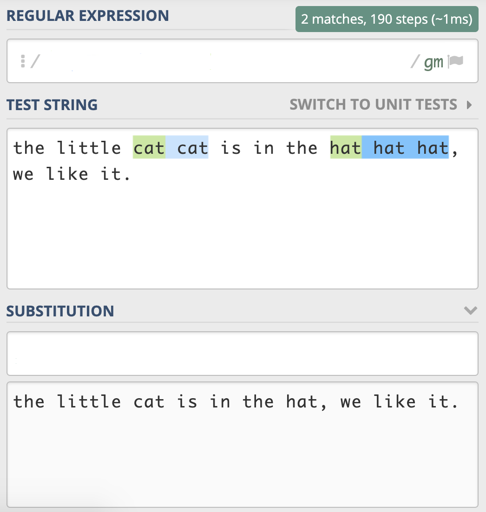
这个题目我给出了相应的地址 https://regex101.com/r/2RVPTJ/3，你可以直接在网页上进行测试，写入相应的 “正则查找部分” 和 “正则替换部分”，让结果符合预期。多动手练习，你才能更好地掌握学习的内容。
好，今天的课程就结束了，希望可以帮助到你，也希望你在下方的留言区和我参与讨论。也欢迎把这篇文章分享给你的朋友或者同事，一起交流一下。
© 2019 - 2023 Liangliang Lee. Powered by gin and hexo-theme-book.